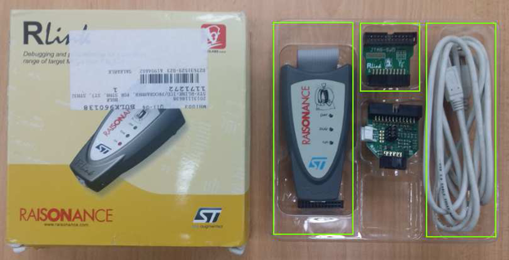
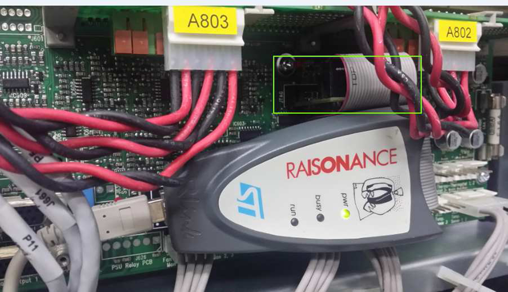
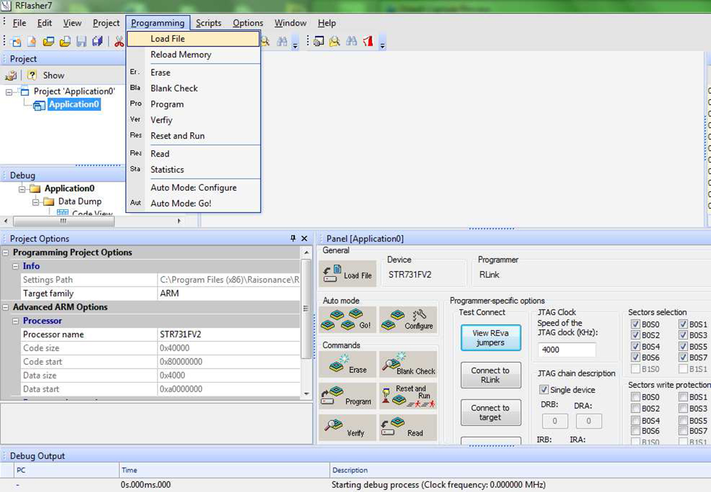
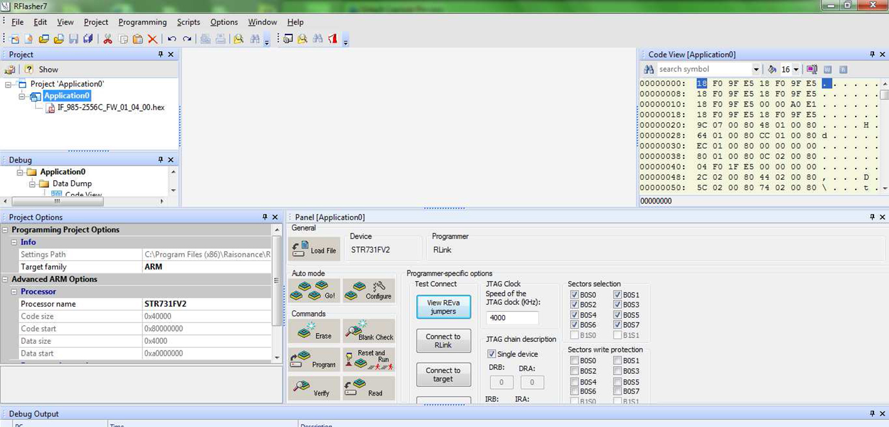
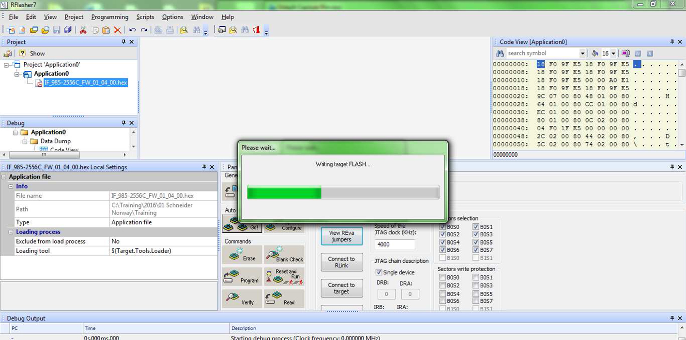
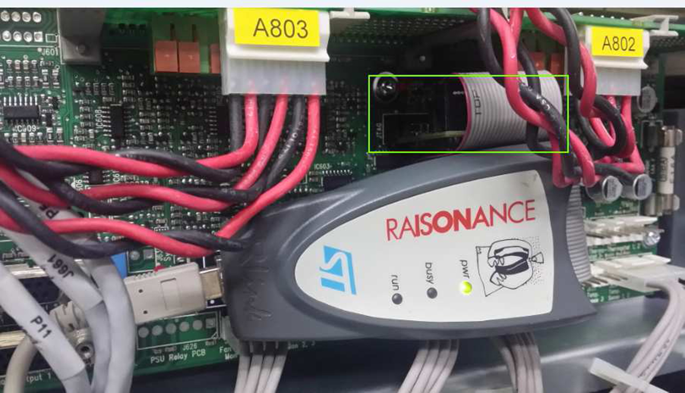
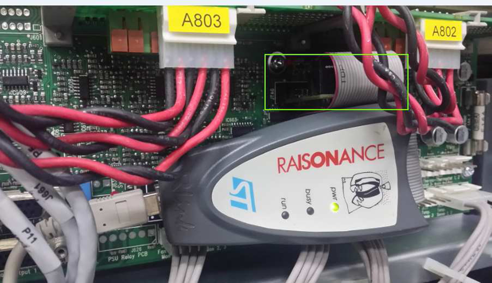
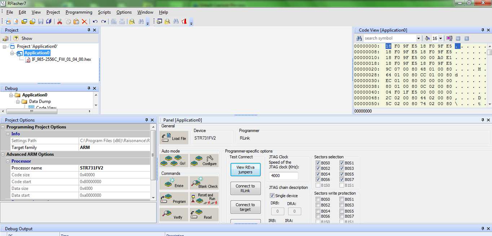
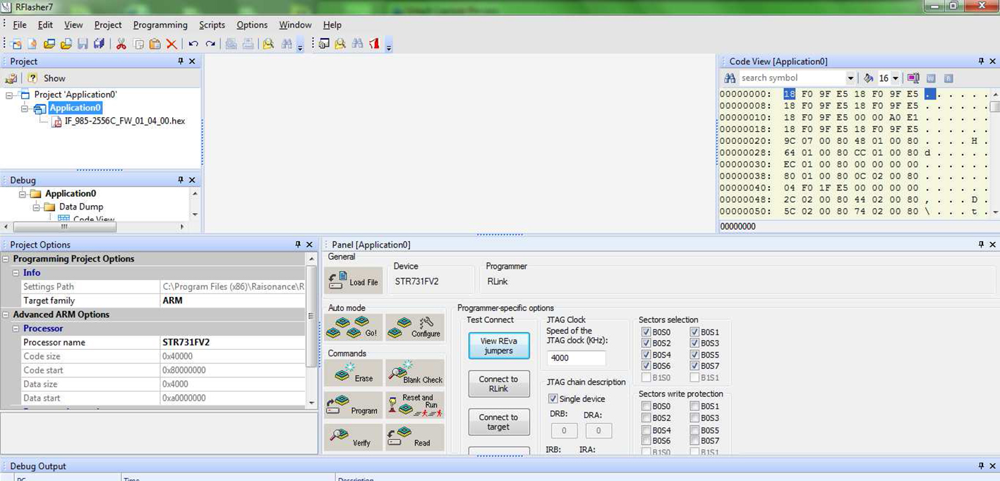

Connect the computer to the interface board at the JTAG
using the Rlink Raisonance programming kit shown below. You must open
(cut) the third pin from the right on the JTAG SWD from the programming
kit to use it.


Install and open the Rflasher7 software,
and click on File > New > Project (for first time access).
Choose the interface board MCU chip model: STR731FV2, and create a new project and click on Finish.
Click on Programming > Auto Mode: Configure (one-time
setup) and set up the automatic mode configuration.
Click on Programming > Load File and browse to the firmware
file.


When the firmware file is loaded, click on Programming > Auto mode: Go!, and the interface board firmware upgrade will start.

When the interface board firmware upgrade is completed,
restart the UPS system.
 



 
